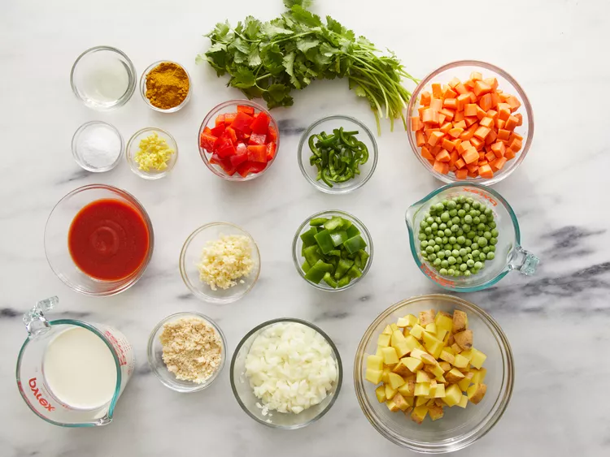

Vegetarian Korma
Vegetarian Korma
This vegetable korma recipe is an easy vegetarian curry. It's rich, creamy, mildly spiced, and extremely flavorful. Serve with naan and rice.
Ingredients
- 1½ tablespoons vegetable oil
- 1 small onion, diced
- 4 cloves garlic, minced
- 1 teaspoon minced fresh ginger root
- 4 carrots, cubed
- 2 potatoes, cubed
- 1 (4 ounce) can tomato sauce
- 3 tablespoons ground unsalted cashews
- 1 fresh jalapeno pepper, seeded and sliced
- 1½ tablespoons curry powder
- 2 teaspoons salt
- 1 cup heavy cream
- 1 cup frozen green peas
- ½ green bell pepper, chopped
- ½ red bell pepper, chopped
- 1 bunch fresh cilantro for garnish
Directions
- Gather all ingredients.

- Heat oil in a skillet over medium heat. Add onion; cook and stir until tender, about 2 to 3 minutes. Stir in garlic and ginger; cook and stir until fragrant, about 1 minute.
- Stir in carrots, potatoes, tomato sauce, cashews, and jalapeño. Season with curry powder and salt; cook and stir until potatoes are tender, about 10 minutes.
- Stir in cream, peas, green bell pepper, and red bell pepper; reduce heat to low, cover, and simmer for 10 minutes. Garnish with cilantro to serve.